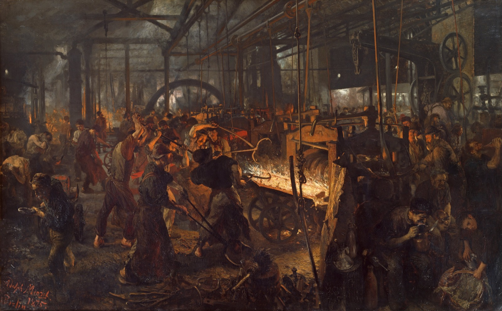

The Communist Manifesto credits capitalism with more productive power than all earlier generations combined. Its authors want to overthrow it. Marx and Engels argue that factories bring together the workers who can replace private ownership with collective control.
The pamphlet was published in German in London in 1848. The Communist League commissioned both men to write its program; Engels's earlier Principles of Communism sets out many of the same questions. The later prefaces describe the commission and their joint authorship.
Eight stops follow the argument, with distinct detours into Marx's alienation and economics and his work with Engels on ideology.

Stop 1 / The historical claim
History through class struggle
The Manifesto, Section I, opening sentence
The history of all hitherto existing society is the history of class struggles.
Marx and Engels begin with conflict over how people live and work. A serf owes labor or produce to a lord. A wage worker sells labor to an employer. These arrangements have different rules, but each gives one class power over another. The authors treat that conflict as central to understanding political history.
In their account, expanding trade and manufacturing outgrew the guilds and feudal property relations that governed production. The rising bourgeoisie fought to replace those restrictions. Economic change supplies a reason for conflict and a class able to pursue it.
Engels's 1888 footnote narrows “all” to written history and discusses earlier communal ownership. It reflects his reading of nineteenth-century anthropology, rather than establishing that class struggle explains every society. The opening paragraph also allows a struggle to end in the common ruin of the contending classes. Progress is not guaranteed by every conflict.
Stop 2 / Industry and the world market
Capitalism keeps changing the conditions of life
The Manifesto, Section I, on changing social relations
All that is solid melts into air, all that is holy is profaned, and man is at last compelled to face with sober senses his real conditions of life, and his relations with his kind.
The authors' examples of capitalist achievement include steam navigation, railways, and electric telegraphs. They see capitalism as revolutionary because it continually changes production and the social relations built around it.
Expanding markets link this disruption across countries. Producers use distant raw materials and sell to customers abroad. Local industries face new competitors. The passage combines observations of existing trade and colonial expansion with a forecast of growing integration.
The authors describe Western expansion through a hierarchy of “civilised” and “barbarian” nations. They recognize that the market forces societies to change, while treating European industrial development as the measure of progress.
Stop 3 / The class forecast
Owners and wage workers
The Manifesto, Section I, excerpt on class division
Society as a whole is more and more splitting up into two great hostile camps [...]
The two camps are the bourgeoisie and proletariat. Large firms, the authors argue, will displace small producers. Artisans, shopkeepers, and peasants will increasingly become wage workers. The authors describe several existing classes and predict their growing polarization.
The wage worker can choose an employer, but usually needs some employer to buy their labor. Marx develops that distinction in Capital, chapter 6: the worker is legally free to sell labor-power, their capacity to work, and lacks independent access to the resources needed to put it to use. Legal freedom can coexist with economic dependence.
The categories become less straightforward when a wage worker also owns investments and supervises other employees. The Manifesto acknowledges intermediate classes, but expects them to decline. Identifying a conflict between owners and workers does not establish that society must divide into two unified camps.
Stop 4 / An earlier manuscript
Work that belongs to someone else
1844 manuscripts, “Estranged Labour,” manuscript page XXII, excerpts
The worker becomes an ever cheaper commodity the more commodities he creates.
[...] the object which labor produces [...] confronts it as something alien, as a power independent of the producer.
Marx's term for this separation is alienation. A worker produces something, but another person owns the result and directs the activity. The product can become capital that gives its owner more power over the people who made it. Marx's complaint concerns control over work as well as what it pays.
He describes estrangement from the product, from the activity of producing, from other people, and from what he calls our species-being. That last term means the human capacity for free, conscious activity: making and shaping a shared world for purposes beyond immediate survival. Work performed only to secure a wage frustrates that capacity in his account.
A worker's inability to afford the object they make can illustrate poverty, but it does not define alienation. Higher wages could leave the employer's control intact. These unfinished manuscripts were written in 1844 and first published in 1932, long after the Manifesto appeared.
Stop 5 / The later economic argument
How Marx explains surplus value
Capital, Volume I, chapter 9, section 1
He creates surplus-value which, for the capitalist, has all the charms of a creation out of nothing.
Marx published Volume I of Capital in 1867. He asks how capital grows even when goods, including labor-power, exchange at their full value. Buying someone's capacity to work gives the employer control over its use and the resulting product.
In his chapter 7 example, the value of a day's labor-power corresponds to six hours of labor, while the employee works twelve. The first six hours replace the wage's value; the remaining six create surplus value for the capitalist. This is an illustration within Marx's model, not a measurement of every working day. The whole shift can be paid according to the contract while part of the value produced remains uncompensated.
The model also counts materials and machinery used up in production. Marx argues that living labor adds new value while those inputs transfer existing value. In the Critique of the Gotha Programme, section I, he rejects the claim that labor is the source of all wealth and names nature as another source.
His theory relates commodity value to socially necessary labor-time, the time required under prevailing conditions. Objections include why labor should have that unique role and how labor-values relate to market prices. Unequal bargaining power can be examined without accepting this theory of value.
Capital also calls attention to commodity fetishism. In chapter 1, section 4, independently organized producers become connected through exchange, so their social relationships appear as properties of the goods they trade. A product's market value seems to belong to the object itself. Marx is explaining how exchange organizes people's work, rather than simply complaining that shoppers overlook the workers behind a product.
Stop 6 / Marx and Engels on ideology
Who can make their ideas prevail?
The German Ideology, Part I, “Ruling Class and Ruling Ideas,” excerpt
The ideas of the ruling class are in every epoch the ruling ideas [...]
A class that controls material production also has greater control over intellectual production, Marx and Engels argue. Its interests can appear as society's interests. Their manuscript was written in 1845 to 1846 and published in full in 1932.
Their example is the doctrine of separation of powers where monarchy, aristocracy, and bourgeoisie contend for control. They interpret it as an expression of those groups' divided power: an idea's authority has a material explanation.
Separation of powers might still restrain abuse even if it arose from competing class interests. Explaining who benefits from the arrangement does not settle how well it works.
Stop 7 / Back to the Manifesto
From wage dependence to collective ownership
The Manifesto, Section I, final sentences
What the bourgeoisie therefore produces, above all, are its own grave-diggers. Its fall and the victory of the proletariat are equally inevitable.
Factories concentrate workers; transport and communication connect their struggles. The authors expect workers to organize into unions and a political movement, take power, and end the ownership relation that keeps them dependent. They acknowledge that competition among workers disrupts their unity. The claim that they must eventually win goes beyond the mechanisms the pamphlet describes.
Section II calls for abolishing bourgeois private property: ownership through which capital employs and commands other people's labor. It distinguishes that from personal appropriation of goods for living. The program would nevertheless make extensive changes, including abolishing private landownership and inheritance.
The first step is working-class political supremacy, described as winning the battle of democracy. The ten transitional measures include public education and a progressive income tax, alongside a state monopoly over credit, centralized transport, and an obligation to work. The authors expect class distinctions and coercive political power eventually to disappear, making possible an association where “the free development of each is the condition for the free development of all.”
They later qualified the practical program. In their 1872 preface, Marx and Engels say some measures have become outdated and that workers cannot simply take over the existing state machinery. They retain the general principles, but no longer present every 1848 proposal as current instructions.
The closing slogan, three wordings
The familiar slogan compresses and rearranges the ending. Here it is beside Moore's version and the final German line.
Stop 8 / What the argument leaves open
The forecast and the governments built in its name
The Manifesto, Section IV, final paragraph
They openly declare that their ends can be attained only by the forcible overthrow of all existing social conditions.
The promised outcome has not followed. Capitalism has survived repeated crises, and wage workers have not united into one victorious international class. The Manifesto's own immediate forecast is concrete: in Section IV, it expects a bourgeois revolution in Germany to be followed immediately by a proletarian one. That sequence did not occur.
Marx's later position allowed other possibilities. In the 1882 Russian preface, he and Engels consider Russia's communal landownership a possible starting point for communist development, provided a Russian revolution and a Western workers' revolution support each other. Their proposal still depends on an international transition.
Later governments claiming Marx's legacy established coercive rule and caused mass death. The Soviet record includes forced collectivization, executions, and labor camps; the Library of Congress's Russian archives exhibition documents those institutions and policies. For China, Ashton, Hill, Piazza, and Zeitz's demographic study estimates almost 30 million premature deaths in the famine of 1958 to 1961, identifying government policy and natural disaster among the causes. That is an estimate of famine mortality, not a count of executions.
For Cambodia under Pol Pot, Patrick Heuveline's reconstruction gives a median estimate of 1.9 million excess deaths during 1975 to 1979, with a 95% uncertainty interval of 1.2 to 2.8 million. Excess deaths compare actual mortality with an estimated baseline; they include deaths from deprivation as well as violence.
The Manifesto supplies grounds for asking how those regimes relate to its program. It endorses force, expropriation, and an initial concentration of production under state control. It leaves the safeguards against a new ruling group largely unspecified.
There are also grounds for distinguishing Marx's proposals from later dictatorships. In The Civil War in France, section III, he praises the Paris Commune's elected, recallable representatives and its removal of the standing army. Those are institutional commitments, though they do not amount to a complete design for a future society.
The unresolved question is who would control collective property in practice. Calling a government the representative of the workers does not give workers the power to replace it. Marx's critique makes ownership and control central; a proposed alternative needs to answer that same question.
Texts and sources
The passages are excerpts; bracketed ellipses mark omissions. The explanations are this page's reading of the argument.
- The Communist Manifesto: Samuel Moore's 1888 English translation. Engels says in the 1888 preface that they revised it together. The linked copies give the section locators, his added notes, and the later prefaces.
- Capital, Volume I: Samuel Moore and Edward Aveling's 1887 translation, edited by Engels. The archive's copy includes some later changes and modernized spelling. Quotes were checked against that transcription. Engels edited Volume II and Volume III from Marx's manuscripts after his death.
- The 1844 manuscripts: Martin Milligan's translation, Progress Publishers, 1959. The alienation excerpts are from “Estranged Labour,” manuscript page XXII.
- The German Ideology: Marx and Engels, Part I, “Ruling Class and Ruling Ideas.” The online text names Progress Publishers, 1968, as its source. The Collected Works publisher's preface identifies W. Lough as translator of the “Feuerbach” chapter. Full publication dates to 1932; parts had appeared earlier.
- Interpretation: Jonathan Wolff and David Leopold's Stanford Encyclopedia of Philosophy entry discusses alienation, value theory, exploitation, and Marx's sparse account of a future society. The historical estimates are linked to their studies in stop 8.
The painting is Menzel's The Iron Rolling Mill (Modern Cyclopes), held at the Alte Nationalgalerie. Its museum description records his study of factory conditions and preparatory sketches in Upper Silesia in 1872.